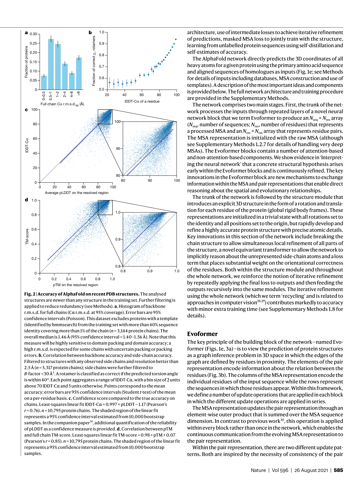
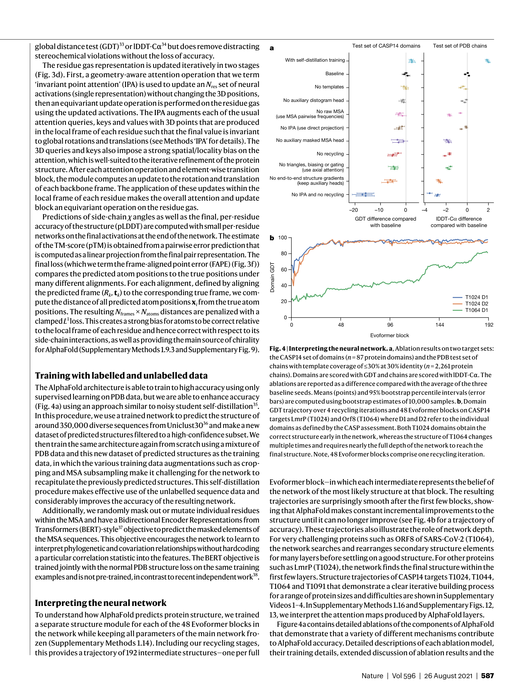
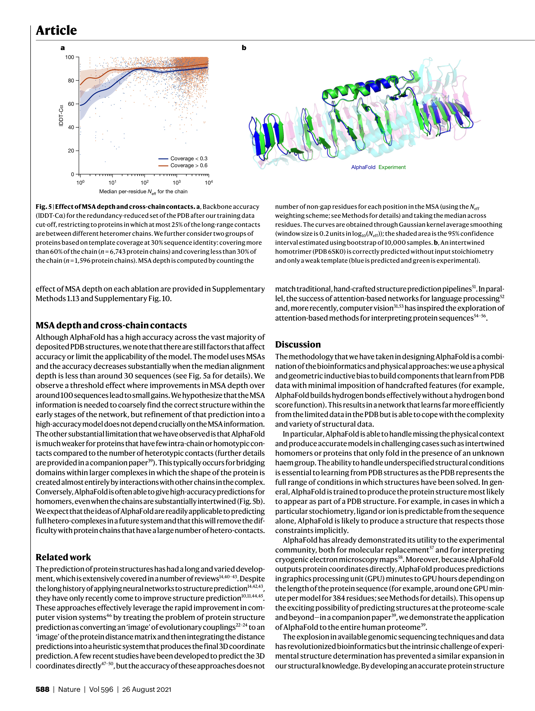

Figure 1
저자: John Jumper, Richard Evans, Alexander Pritzel, Tim Green, Michael Figurnov, Olaf Ronneberger, Kathryn Tunyasuvunakool, Russ Bates, Augustin Žídek, Anna Potapenko, Alex Bridgland, Clemens Meyer, Simon A. A. Kohl, Andrew J. Ballard, Andrew Cowie, Bernardino Romera-Paredes, Stanislav Nikolov, Rishub Jain, Jonas Adler, Trevor Back, Stig Petersen, David Reiman, Ellen Clancy, Michal Zielinski, Martin Steinegger, Michalina Pacholska, Tamas Berghammer, Sebastian Bodenstein, David Silver, Oriol Vinyals, Andrew W. Senior, Koray Kavukcuoglu, Pushmeet Kohli, Demis Hassabis | 날짜: 2021 | Journal: Nature | DOI: 10.1038/s41586-021-03819-2
Figure 1
아미노산 서열만으로 단백질 3D 구조를 원자 수준 정확도로 예측할 수 있다. AlphaFold는 CASP14에서 backbone 중앙값 정확도 0.96 A r.m.s.d.95를 달성하여, 차점자(2.8 A)를 약 3배 앞섰으며, 이는 탄소 원자 직경(1.4 A) 수준의 정밀도다. All-atom 정확도는 1.5 A r.m.s.d.95로, 대다수 경우에서 실험적 구조 결정과 경쟁할 수 있는 수준이다.

Figure 2
실험적으로 결정된 단백질 구조는 약 10만 개에 불과하지만, 알려진 단백질 서열은 수십억 개에 달한다. 단일 단백질 구조를 실험적으로 결정하는 데 수개월에서 수년이 소요되어, 구조 생물학의 병목이 되고 있었다. 서열로부터 3D 구조를 예측하는 "단백질 접힘 문제"는 50년 이상의 난제였으며, 기존 계산 방법들은 상동 구조가 없는 경우 원자 수준 정확도에 크게 미달했다. 물리적 시뮬레이션과 진화적 공변이(covariation) 분석이라는 두 가지 전통적 접근법의 한계를 딥러닝 기반 end-to-end 구조 예측으로 돌파하고자 했다.

Figure 3

Figure 4

Figure 5
총평: 50년 난제인 단백질 구조 예측 문제를 원자 수준 정확도로 해결한 획기적 연구로, Evoformer와 IPA 등 독창적 아키텍처 설계가 물리적/기하학적 귀납적 편향을 딥러닝에 성공적으로 통합했다. 구조 생물학과 AI 분야 모두에 근본적 영향을 미친 랜드마크 논문이다.